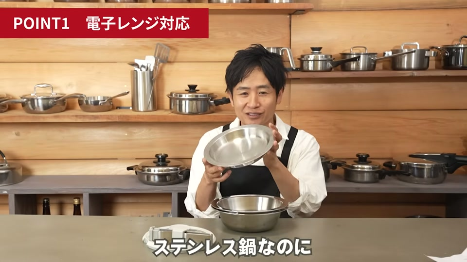
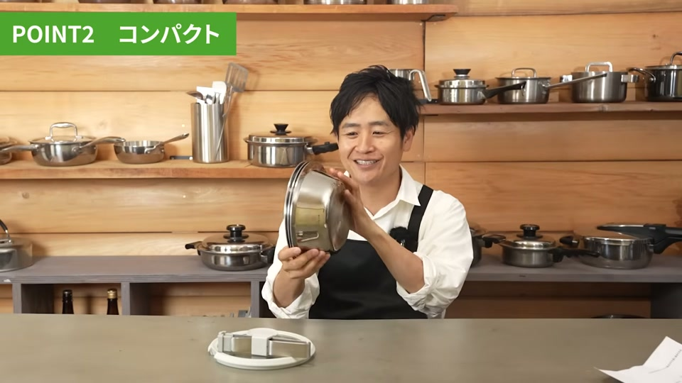
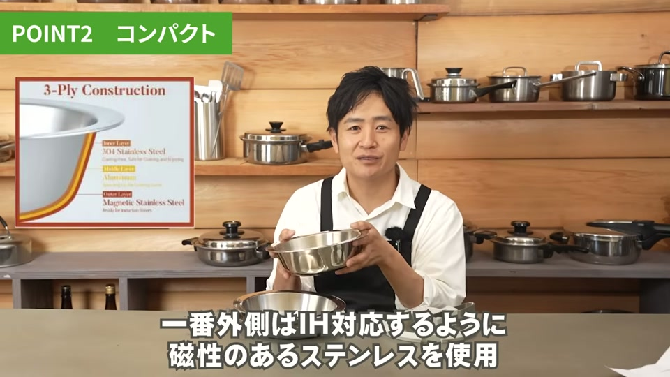
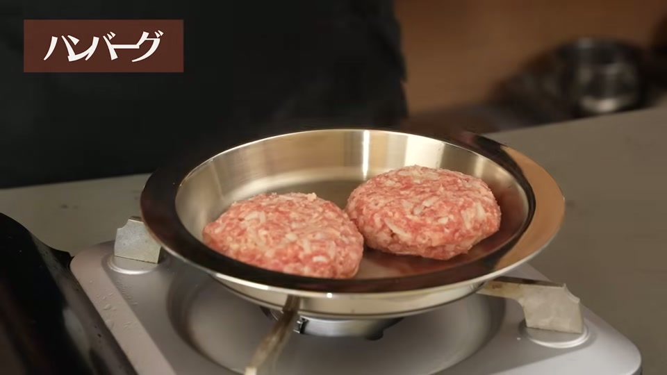
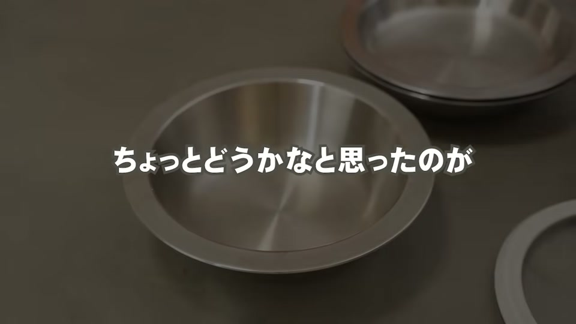
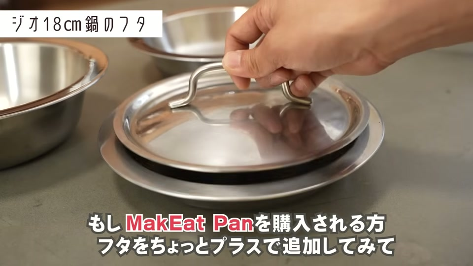
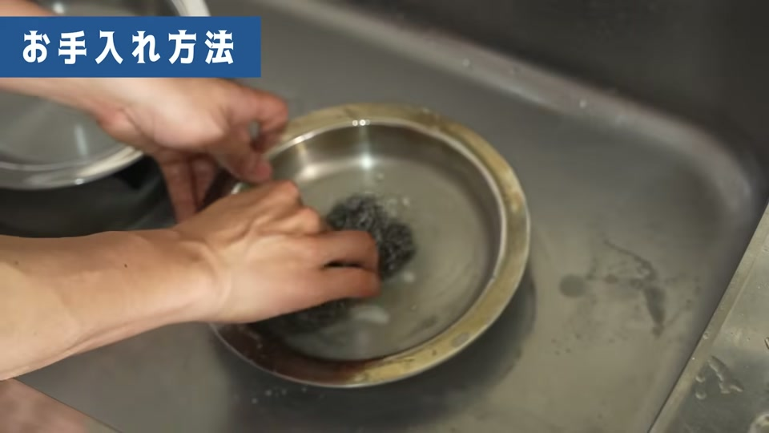

【正直レビュー】電子レンジ対応ステンレス鍋「MakeEat Pan」のメリット・デメリットを徹底解説！
「ステンレス鍋は電子レンジに使えない」「フッ素加工鍋の安全性が気になるけれど、ステンレス鍋は重くて収納に困る」といったお悩みを抱えていませんか？
結論から言うと、台湾で大ヒットし日本に初上陸した「MakeEat Pan」は、ステンレス製でありながら電子レンジ加熱に対応し、3サイズがコンパクトに重ねられる画期的な万能鍋です。
この記事では、MakeEat Panの特徴や実際の調理性能、購入前に知っておくべき注意点まで、分かりやすく整理して徹底解説します。
MakeEat Panが持つ5つの大きな特徴（メリット）

MakeEat Panには、従来のステンレス鍋やフライパンにはない革新的なメリットが凝縮されています。
1. ステンレス製なのに電子レンジ加熱が可能
一般的な金属製容器を電子レンジに入れると火花が散り危険ですが、MakeEat Panは特殊構造により電子レンジでの加熱が可能です。火花が出ないだけでなく、加熱後も容器の外側が熱くなりにくいため、安全に取り出すことができます。プラスチック容器のように加熱時に有害物質が溶け出す心配もありません。
2. 3つの深さの鍋がすっぽり重なる優れた収納性
深さの異なる3種類の鍋（深型・中型・浅型）がピタッと綺麗にスタッキングできます。重ねた状態でも非常にコンパクトなため、収納スペースが限られている狭いキッチンでも場所をとりません。
3. 高い熱伝導と保温性を誇る「全面三層構造」
- 内側：安全性の高い「304ステンレス」（食材に直接触れる部分）
- 中層：熱伝導性に優れた「アルミニウム」
- 外側：IH調理器にも対応する「ステンレス」
全体で約2.5mmの厚みがあり、熱が均一に伝わるため、焼きムラや焦げ付きを抑えた本格調理が可能です。
4. ボウル・保存容器・下ごしらえ用としてマルチに活躍
調理用の鍋としてだけでなく、サラダをあえるボウル代わりに使ったり、余った料理を入れてそのまま冷蔵庫で保存したりできます。冷えた状態から直接コンロ火にかけて温め直すことも可能です。
5. 直火からアウトドア（BBQ）まで対応する耐久性
キッチンのIH・ガス火はもちろん、アウトドアのバーベキューや網の上、直火での調理にもそのまま使えます。1セットあれば屋内・屋外を問わず重宝します。
【検証】実際に調理して分かったMakeEat Panの実力

MakeEat Panの厚手三層構造により、様々な料理で素材の旨みを引き出す高いパフォーマンスが確認されています。
| 料理メニュー | 調理の様子と仕上がり |
|---|---|
| リゾット | 鍋底にくっつきにくく、米がするりと滑るように美味しく仕上がる |
| ハンバーグ | 均一に熱が伝わり、きれいな焼き目がついてジューシーに焼ける |
| カレイの煮付け | アクや渋みが出にくく、少ない調味料でも生臭さを抑えて素材の味を引き立てる |
| 揚げ物（天ぷら等） | 鍋底に厚みと重みがあるため油温が下がりにくく、カラッと安定して揚がる |
購入前に確認すべきデメリット・注意点

非常に優秀なMakeEat Panですが、実際に使う上で抑えておきたい注意点や弱点もあります。補正方法と合わせてチェックしておきましょう。
付属のガラス蓋は高さのある料理に不向き
付属のガラス蓋は完全な「平型」となっています。高さのある食材や厚みのあるハンバーグなどを焼く際、上部からの熱回りが弱くなる場合があります。 * 対処法：市販の18cmドーム型ガラス蓋などを別途併用することで、蒸気循環が良くなり高さのある料理もふっくら仕上がります。
着脱ハンドルにややグラつきがある
付属の着脱ハンドルは構造上、少しグラつきを感じる場合があります。 * 対処法：重い料理を持ち上げる際や不安な場合は、ハンドルだけに頼らずミトン（鍋掴み）や耐熱グローブを併用して両手で支えるのが安心です。
ガスコンロの五徳の上で滑りやすい
鍋底の表面が滑らかな仕様になっているため、五徳の形状によっては調理中に滑りやすく感じることがあります。 * 対処法：調理中に鍋をかき混ぜる際は、手袋やミトンで鍋の縁をしっかり保持しながら調理を行いましょう。
お手入れ方法と焦げ付き・変色の解決策

ステンレス鍋の大きな魅力は「手入れのしやすさとタフさ」です。
- 普段のお手入れ：フッ素加工鍋のように剥がれを気にする必要がないため、金属タワシでゴシゴシ洗いを行って問題ありません。
- 初回使用時の変色・頑固な焦げ付き：初回使用時にステンレス表面が金色に変色したり、強火で焼き付いたりした場合は、ステンレス専用の鍋磨き洗剤（「プラチナムクイーン」など）を使用するときれいに元の輝きを取り戻せます。
【独自解説】MakeEat Panを失敗なく快適に使いこなすための具体的アクション

MakeEat Panを長く快適に使いこなすためには、購入直後から「火力のコントロール」と「電子レンジ加熱時の基本ルール」を意識することが大切です。
まず調理時の火力ですが、三層構造で熱保持力が非常に高いため、「中火〜弱火」を基本としましょう。強火で一気に加熱すると焦げ付きや変色の原因になりやすいため、予熱をしっかり行ってから中火以下で調理を始めるのが美味しく仕上げるコツです。
また、電子レンジで加熱する際は、金属製のスプーンやフォーク、あるいは金属付属の蓋などを一緒に入れないことを徹底してください。鍋本体は電子レンジ対応ですが、異物が接触するとスパークの原因になります。ご家族で共有する際も、「レンジに使えるのは鍋本体のみ（または電子レンジ対応のフタ等）」とルールを決めておくと安全に使用できます。
よくある質問（FAQ）

Q1. 本当にステンレス鍋を電子レンジに入れて火花が出ないのですか？
A. はい。MakeEat Panは電子レンジ対応の特殊構造で作られているため、火花が散る心配はありません。加熱後も鍋の外側が熱くなりにくく、安全に取り扱えます。
Q2. フッ素加工（テフロン）鍋と比べてどのようなメリットがありますか？
A. フッ素樹脂塗膜の剥がれやPFOA等の化学物質リスクがなく、身体に優しく長期間安全に使えます。また、金属タワシでゴシゴシ洗えるため衛生的に保てます。
Q3. 焼き付きや変色が起きた場合はどうすればいいですか？
A. 内側は金属タワシでしっかり洗って大丈夫です。変色や固着した汚れには、ステンレス専用のクレンザーや「プラチナムクイーン」などの専用洗剤を使って磨くとピカピカになります。
まとめ：MakeEat Panはどんな人におすすめ？

MakeEat Panは、以下のような悩みやニーズを持つ方に特におすすめの調理器具です。
- 安全な調理器具を使いたい人（フッ素加工の剥がれや化学物質が気になる方）
- キッチンの収納スペースを節約したい人（一人暮らしや狭いキッチンの方）
- 1つの器具で調理・温め直し・保存を完結させたい人
- アウトドア（BBQ）でも使えるタフな鍋を探している人
付属パーツの弱点は市販のドーム型蓋やミトンで十分にカバーできます。「脱フッ素」と「時短・省スペース」を両立したい方は、ぜひ検討してみてはいかがでしょうか。
運営者の一言コメント
金属製なのに電子レンジOKという常識を覆す技術には本当に驚かされました！安全な脱フッ素調理とコンパクト収納を両立したい方に、まさにぴったりの画期的な調理器具ですね。（88文字）
動画で紹介されているアイテム・サービス
- MakeEat Pan（Makuakeプロジェクトページ）
- MakeEat Pan LINE登録
- 大澤チャンネル公式Instagram
- 大澤チャンネルオリジナル商品サイト（STORES）
- 浄水器「Re」
- 国産置き型浄水器 beaq
- ヘンケルス オールステンレス包丁
- 酵素玄米炊飯器
- プラチナムクイーン（※ステンレス用鍋磨き洗剤）
- ビタクラフト（※比較対象のステンレス鍋）
- クリステル（※比較対象の着脱式ステンレス鍋）